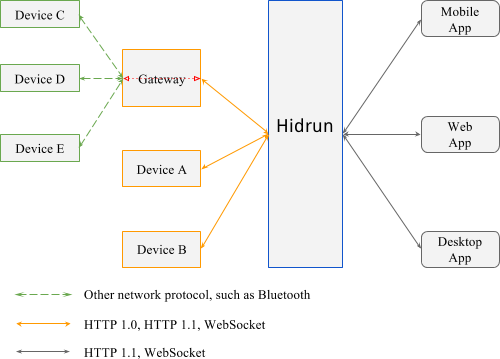

<div class="about-us">
  <h1>海隽云是什么？</h1>

  <p>海隽云是一个物联网平台,用于连接具有 Linux 操作系统的智能终端以及机器人。
    </p>

  <p>海隽致力于提供针对工业及公共服务的智能终端解决方案。
    </p>

  <p>系统架构如下图所示：</p>

  <p></p>

  <div class="alert alert-info">整个硬件终端的软件层在 github 存有开源代码，海隽云提供基于 Python 的编程接口, 以及终端系统映像的下载，其中包含了对各种硬件接口以及 OpenCV 库的支持。</div>

</div>
